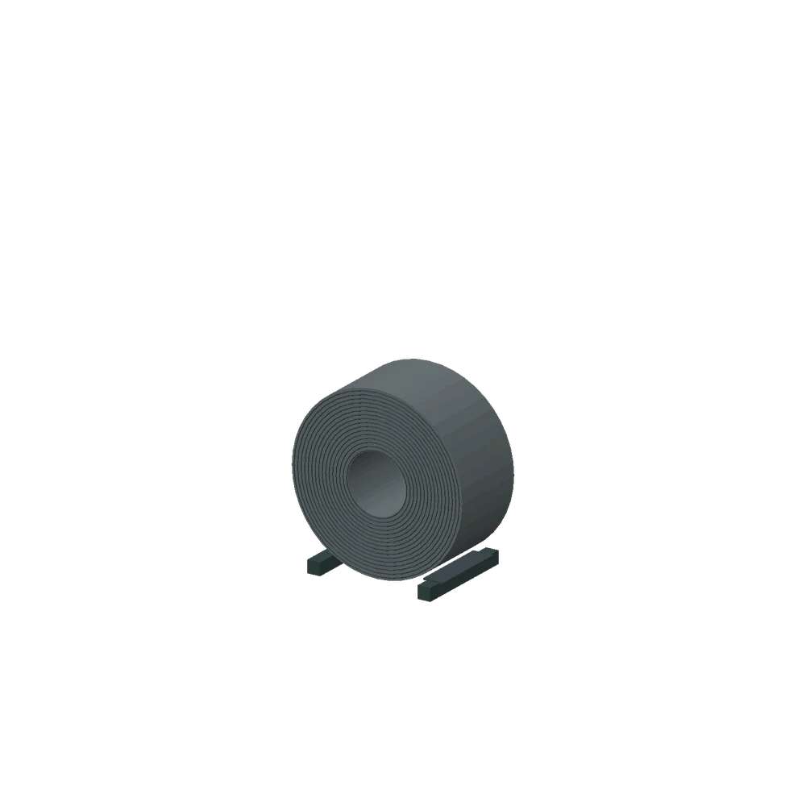

From steel to transformer.
12 monthly milestones
Illustrative project programme
Start with Goss-textured steel.
Cold-rolled 3.2% silicon steel is box-annealed into a directional Goss crystal lattice (0.23 mm), coated with a 2–5 µm phosphate glass film, and certified for core-loss grade.
Electromagnetic design freeze and long-lead procurement.

Scroll to follow the build
Preparing this stage…The months move forward.
The work overlaps.
A monthly milestone marks the focus of the story. Click any workstream bar below to jump to that stage in the 3D build; the vertical playhead tracks your active month across all concurrent streams.
Illustrative scheduling, not measured process durations. Drying, tanking and vacuum oil impregnation are coordinated promptly to prevent cellulose moisture reabsorption.
Read all 12 monthly milestones
| Month | Milestone | Build-up / checkpoint |
|---|---|---|
| 01 | Start with Goss-textured steel. Cold-rolled 3.2% silicon steel is box-annealed into a directional Goss crystal lattice (0.23 mm), coated with a 2–5 µm phosphate glass film, and certified for core-loss grade. | Certified CRGO master coil |
| 02 | Slit and shear 45° mitered plates. Rotary cutters slit the master coil into stepped widths before CNC lines shear 45-degree mitered laminations so corner flux stays aligned with the low-loss grain. | 45° mitered laminations |
| 03 | Stack the three-limb foundation. Laminations are interleaved onto the lower clamping frame to raise three stepped cruciform phase limbs, leaving the top open to receive prefabricated windings. | Stepped three-limb core |
| 04 | Wind the inner low-voltage coils. Electrolytic copper and continuously transposed conductors (CTC) are wrapped in multi-ply kraft paper and wound on mandrels into heavy inner low-voltage cylinders. | LV helical cylinders |
| 05 | Build concentric high-voltage coils. With more turns of finer conductor to step up voltage, the high-voltage disc windings are formed as outer cylinders engineered to nest around each LV coil. | HV multi-disc windings |
| 06 | Fit barriers and press the coils. Pressboard cylinders, axial oil-duct spacers, and end rings lock between the LV and HV coils, then undergo thermal shrinking and hydraulic pressing against fault forces. | Pressed coil assemblies |
| 07 | Lower coils, close yoke, braze leads. Cranes slip the phase windings over the three core limbs; technicians hand-lace the upper yoke, torque the external tie rods, and braze the phase risers and tap leads. | Completed active assembly |
| 08 | Weld, test, and coat the main tank. Heavy structural steel plates and vacuum stiffeners are welded, pass pressure-leak inspection, and receive an oil-resistant interior enamel plus a ≥105 µm exterior coat. | Coated vacuum-rated tank |
| 09 | Vapour-phase dry and tank the core. Hot kerosene vapour and deep vacuum extract bound moisture inside the autoclave; cranes immediately seal the bone-dry active part inside the waiting tank. | Dried & tanked assembly |
| 10 | Fit cover, bushings, and cooling. The cover is bolted down, leads thread through the four LV and three HV porcelain bushings, radiator banks bolt to flank valves, and the offset Buchholz conservator mounts. | Bushings & cooling loop |
| 11 | Vacuum oil-fill and run HV tests. Heated, degassed insulating oil saturates the evacuated tank under deep vacuum before the unit undergoes turns-ratio, heat-run, and lightning-impulse factory testing. | Oil-filled unit under FAT |
| 12 | Sign off FAT and stamp rating plate. After dissolved-gas and partial-discharge records earn customer witness sign-off, the engraved rating plate is riveted to the tank wall for substation dispatch. | Completed power transformer |
Real manufacturing.
An illustrative programme.
The physical sequence draws on transformer manufacturers, an electrical-steel producer and government publications. The allocation to 12 months is editorial, not a promised lead time.
The three-phase, oil-immersed model is an educational reconstruction featuring a 5-stepped cruciform CRGO core with 45° mitered joints, concentric LV/HV windings, a 4-bushing LV bank with neutral, and an offset cantilever conservator. The final state represents factory completion, not an energised installation.
- thyssenkrupp · Grain-oriented electrical steel
Core material, lamination losses and insulating coatings.
- thyssenkrupp · Electrical-steel product declaration
Steel-mill rolling, annealing, coating and slitting; these supplier operations precede transformer assembly.
- Hitachi Energy · Core-type transformers
Grain-oriented steel core and cylindrical copper windings.
- Siemens Energy · Manufacturing step by step
Page 7: winding and core streams, active-part drying, final assembly, oil filling and factory acceptance testing.
- ATS Trafo · Production processes
Conductors, solid insulation, tank fabrication, vacuum drying and oil filling.
- US DOE · Large power transformer study
Pages 8–10: dependencies, parallel tank production, drying and assembly. Historical process reference; its old lead-time figures are not used as current estimates.
- US DOE · Transformer resilience report, 2024
Customisation and supply constraints affect project lead time; a fixed 12 months is an illustrative project programme, not an industry-wide rule.
- SEBI-hosted manufacturer filing · Production flow
Printed pages 210–212: core/winding assembly, drying, parallel tank fabrication, tanking, testing and inspection.